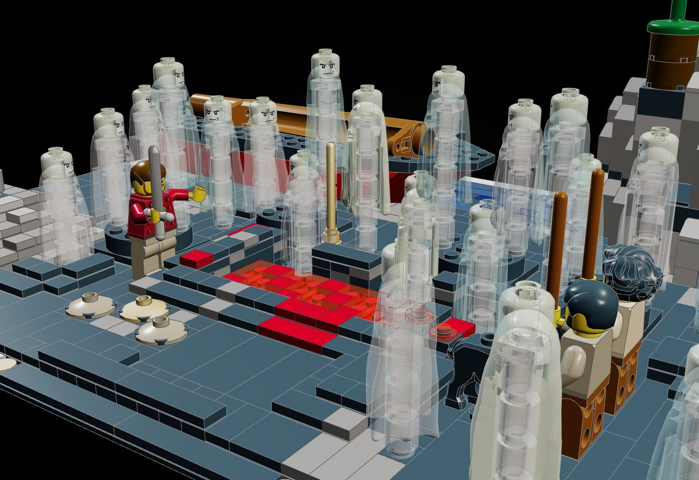
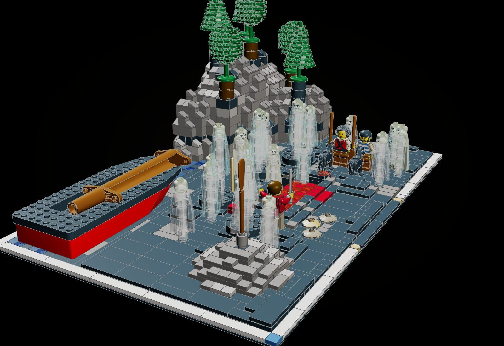
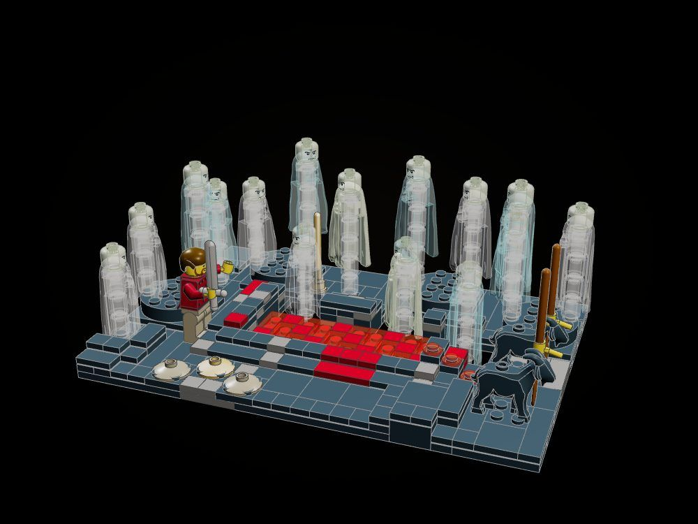
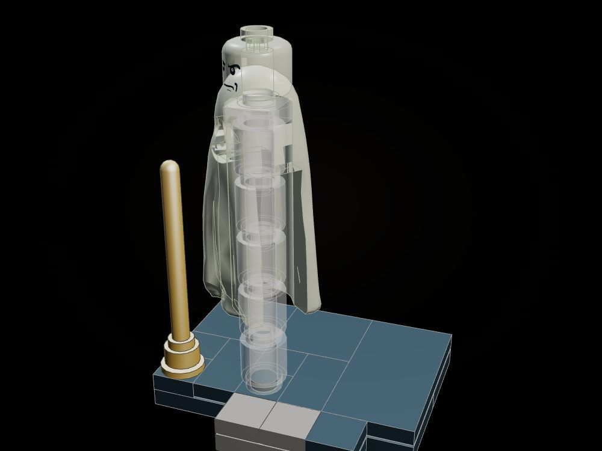
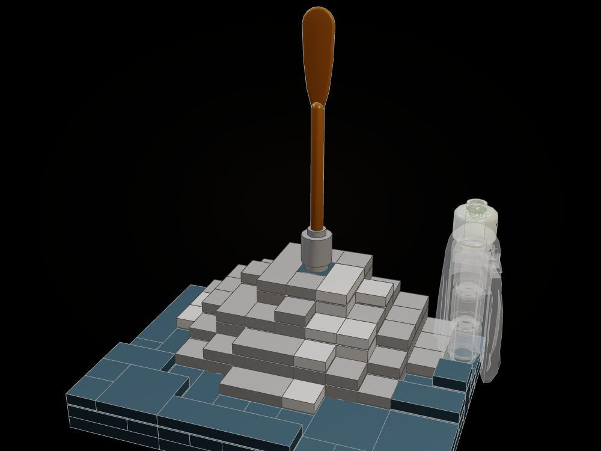

The Land of the Dead
On the sunless Cimmerian shore the throats of the ram and the black ewe are cut over the trench; the shades crowd up to drink, and Odysseus holds them off with his sword until Tiresias comes, leaning on his golden staff, his mother's shade among them.
"I cut the throats of the two sheep and let the blood run into the trench, whereon the ghosts came trooping up from Erebus." (Odyssey XI, tr. Samuel Butler)

The object
The shades: ghost shrouds on clear columns that rise out of the sand round the trench, eight of them in pairs on four turntables that swivel them toward the blood, three more coming up through openings in the heaped spoil.





How it is built
- A 48 x 32 base of two baseplates, finished with the line's white frame, black-and-gold nameplate and blue tile.
- The black-sand shore is a height field of plates tiled over: low dunes, a strand the ship lies on, spoil heaped two studs wide round the pit; studs are kept only where a foot, a turntable or a column stands.
- The trench is a pool of trans-red and dark red tiles one plate below the spoil round it; drops of trans-red run in from the victims.
- Fifteen shades: ghost shrouds over clear 1 x 1 round columns of three to five bricks, so each floats above the sand; eight ride four 4 x 4 turntables, three rise through 3 x 3 openings in the spoil.
- The crag is sculpted in dark grey bricks, every top capped with tiles and cheese slopes, black poplars and willows on it.
- Elpenor's oar stands with its grip in the open stud of a round brick on the crown of his mound.
The builds inside the build
The trench and the shades
The pit of blood in its ring of spoil, the turntables and the shades on them, Odysseus, the crew and the victims.
Tiresias
The seer's shade on its column, glowing, with the golden staff planted beside him.
Elpenor's mound and oar
The heaped mound, the oar planted on its crown, the shade of Elpenor asking for burial.
What the checker says
| Build | File | Pieces | Loose | Clashes |
|---|---|---|---|---|
| The Land of the Dead | set.land-of-the-dead | 1,500 | 0 | 0 |
| The trench and the shades | set.land-of-the-dead-trench | 433 | 0 | 0 |
| Tiresias | set.land-of-the-dead-tiresias | 26 | 0 | 0 |
| Elpenor's mound and oar | set.land-of-the-dead-mound | 142 | 0 | 0 |
In the film

Still to do
- The shades float on clear columns; a real lift (a rack or a sliding post) would let them rise out of the openings in play.
- The ocean-stream along the back is mostly hidden behind the ship; a deeper band of sea would read better.
- The trees are stock pine and round tree parts; brick-built poplars and drooping willows would be more particular.
- Figures and angled parts (the shrouds, heads, the oar, the staff, the lowered mast) are placed by hand and not checked by the tool.